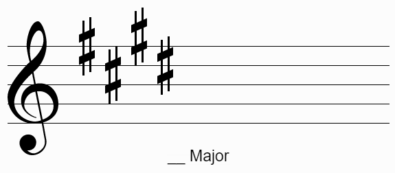
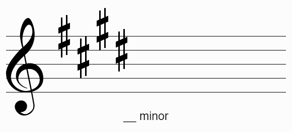
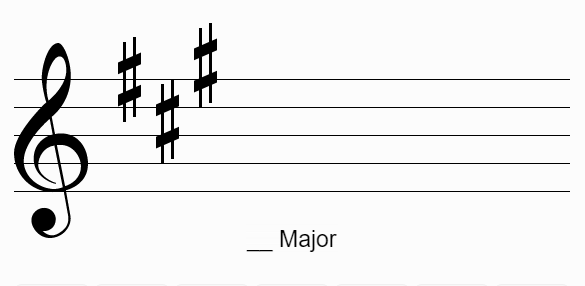
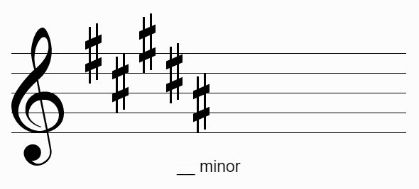
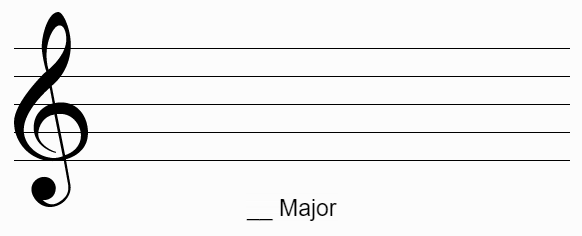
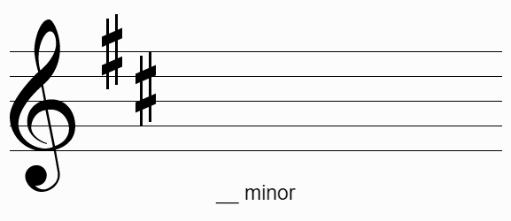
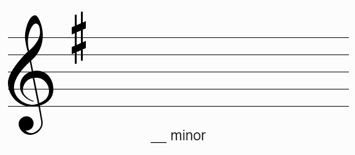

Практична теорія музики
Головна
Теорія
Практика
Контакти
Про проект
Розпізнавання ключових знаків

Введіть ноту ключового знаку:

Введіть ноту ключового знаку:
Введіть ноту ключового знаку:

Введіть ноту ключового знаку:

Введіть ноту ключового знаку:

Введіть ноту ключового знаку:

Введіть ноту ключового знаку:

Введіть ноту ключового знаку:
Перевірити
Малюнки та теоретичний матеріал:
musictheory.net